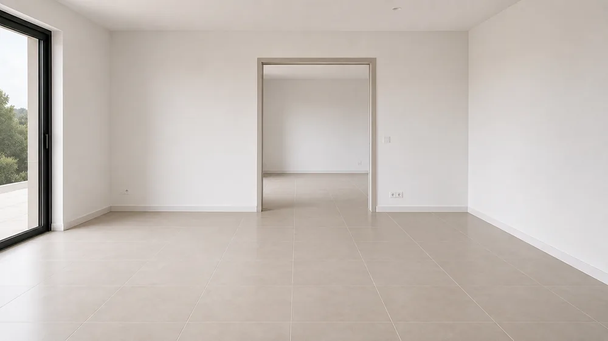
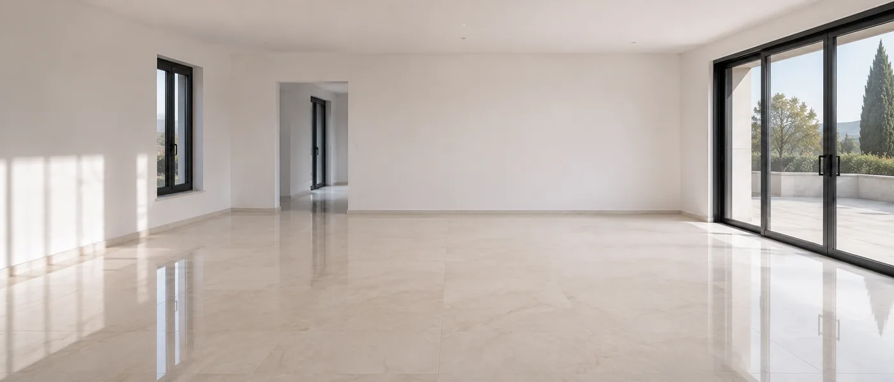
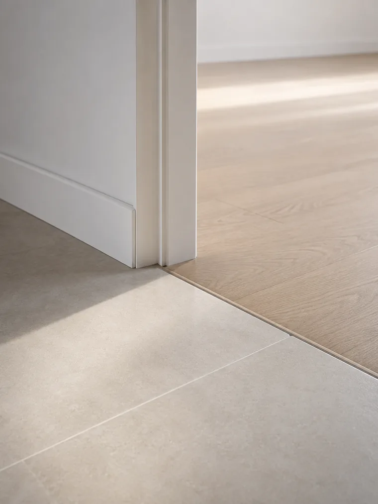
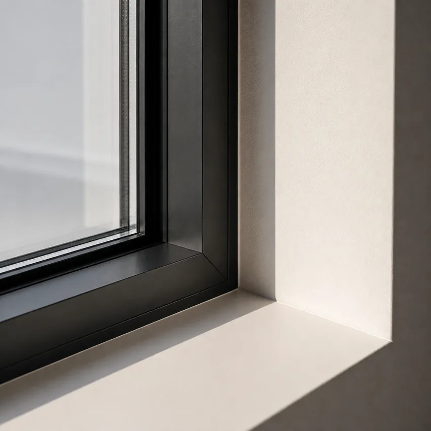

Before handover
The client takes delivery of a presentable property. The builders clean is the last line item of the job, and the one that decides the first impression.

Between the last trade leaving and the keys changing hands, one step remains. It is the one that decides the first impression.
The timeline
The trades leave. The build is finished but the property is unusable: plaster dust still airborne, cement haze on the floors, adhesive tape and protective film still in place.
Removal of fine debris, vacuuming of floors, skirting and corners, stripping of protective film and site tape. This pass makes nothing clean: it makes cleaning possible.
Dealing with embedded residue — cement haze, glue, silicone, paint splashes — then glazing, joinery, sanitaryware and taps. New floors are treated according to their material, not with an all-purpose product.
The space is ready for viewing, the inventory check or moving in. It is also the last window to seal a new floor, before it is used.
What we remove
A builders clean does not remove dirt, it removes building materials. That is why an ordinary clean never gets on top of it, however often it is repeated.
Fine and airborne, it settles again several times after a first pass.
A whitish film left by the grouting, it resists plain water.
On floors, glazing, joinery and taps.
Masking tape, protective film, manufacturer's labels.
Smeared beads on wall tiles, shower trays and worktops.
On skirting, corners and thresholds, wherever the scraping was missed.
In parquet grooves, skirting rebates and cabinet carcasses.
On glazing, sanitaryware and joinery.
The builders clean is the last line item of the job, and the first detail the client sees.
Working principle · SNTM SAPThree moments

The client takes delivery of a presentable property. The builders clean is the last line item of the job, and the one that decides the first impression.

End of tenancy, sale or lease expiry. An inventory check turns on details: the corners, the thresholds, the bathroom seals, the marks behind the doors.

A property bought or rented is cleaned before the furniture arrives. Once the room is loaded, half the surfaces become unreachable.
The right moment
Terracotta, travertine or encaustic tiles fresh from laying are porous and unsealed. They are at their most fragile at exactly the moment the property is handed over, furnished, then walked on every day.
The builders clean is therefore the last window to seal a floor before it goes into service. After that, you are repairing instead of preventing.
See floor treatment in Saint-TropezFrequently asked questions
After the last trade has left and before handover. It is a line item in its own right, not a buffer: plaster dust settles again several times, which forces several passes and therefore real time.
The nature of the soiling. A routine clean removes what settles day by day. A builders clean removes construction residue: cement haze, glue, silicone, plaster, paint splashes. Neither the products nor the techniques are the same.
It is the best moment. New terracotta, travertine or encaustic tiles are porous and unsealed: they are at their most vulnerable. A sealer applied before the space goes into service prevents permanent stains in the very first weeks.
Rarely just one. Airborne fine dust settles again after the first pass, and embedded residue often needs dwell time and then a second go. The number of passes is stated in the quote, after a visit.
To be confirmed case by case. Post-construction cleaning and post-damage restoration do not carry the same constraints or the same timescales.
Yes. We cover the whole Gulf of Saint-Tropez, including Ramatuelle, Gassin, Grimaud, Cogolin, Sainte-Maxime, Cavalaire-sur-Mer and La Croix-Valmer, plus other towns in the Var depending on the job.
Our other services
Eight materials, eight behaviours, and what each one needs.
Routine maintenance of your premises, once the property is handed over.
Sales floors and common areas, around your opening hours.
Jobs carried out across the Gulf of Saint-Tropez.
Give us the area, the nature of the works and the handover date. We come and look before committing to a deadline.